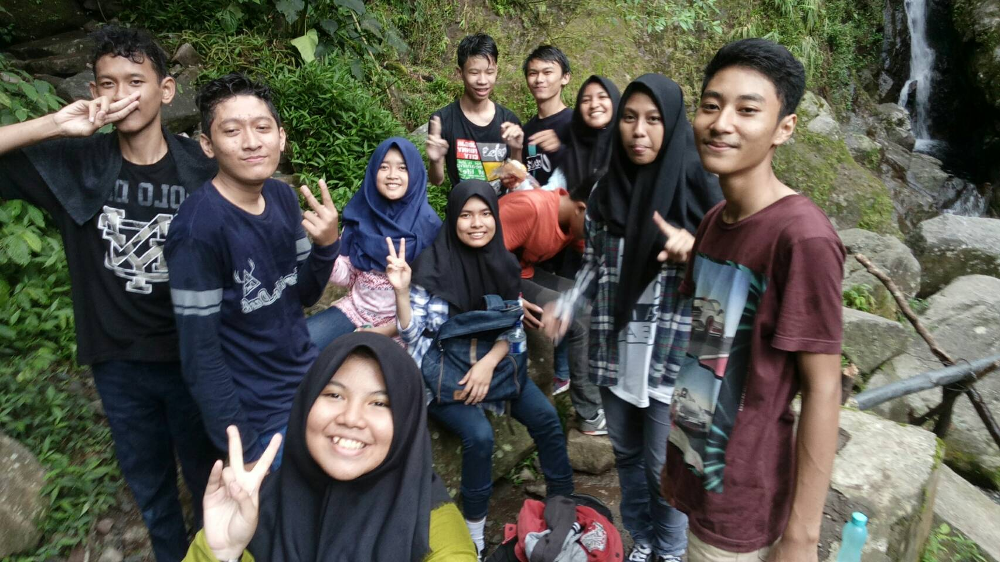
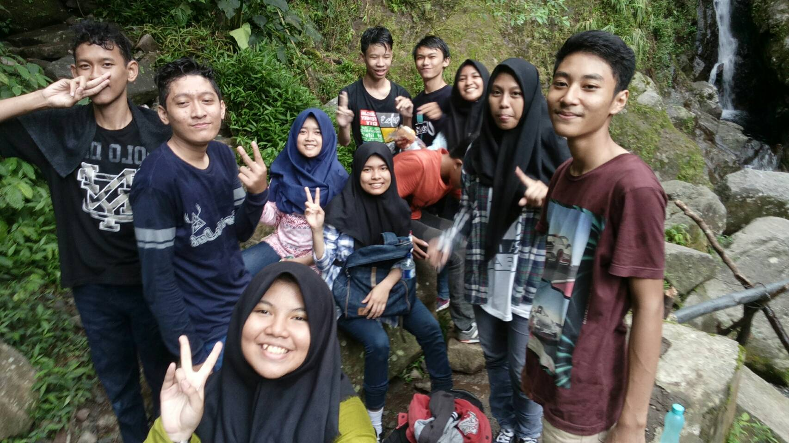
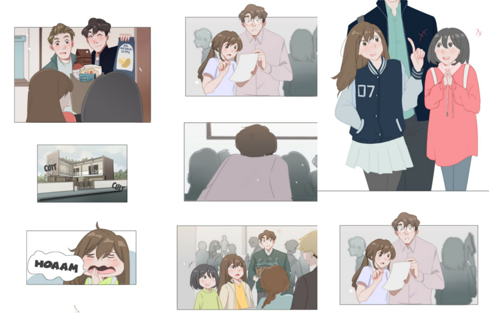

Nama : Rahmawati
Tempat, tanggal Lahir : Bogor, 29 September 2000
Alamat Rumah: Jl. raya Brigjen Saptaji Hadi Prawira, Cilendek gg. Mesjid rt.02 rw.01 no.34
Anak : 3 dari 3 bersaudara
Email : rahmawati@smakbo.sch.id
Cita-cita :
-menjadi orang yang bermanfaat bagi bangsa dan agama,
- menjadi seorang guru yang baik bagi muridnya,
- menjadi anak yang berbakti untuk kedu orang tua,
- dapat membahagiakan orang sekitar terutama keluarga dekat.
saya suka bepergian apalagi ketempat yang indah.
 

karena waktu senggang yang saya punya tidak cukup untuk pergi ke bioskop jadi biasanya saya hanya diam di kamar sambil menonton drama.


terkadang ketika saya tidak memiliki stok drama untuk ditoton, saya sering meluangkan waktu senggang saya untuk membaca Webtoon.

Nama saya Rahmawati. menurut teman teman saya nama yang saya punya sangatlah pendek tapi sya suka nama itu karena nama itu pemberian dari kedua orang tua saya. Saya biasa dipanggil 'rahma' atau 'wati'. Kalau di Sekolah sih dipanggilnya 'wati', tapi kalau di Rumah dipanggilnya 'rahma'. Saya tinggal di Bogor, bersama kedua orang tua saya dan juga kedua kakak saya. saya punya dua orang kakak yang pertama namanya Kamal Hasan dan yang kedua namanya Zahrah Hasanah. kita gak terlalu akur satu sama lain tapi tetep aja walau kadang harus berantem, saya sayang kakak kakak saya. Saya sekarang bersekolah di SMK-SMAK Bogor dan duduk di kelas 11. Awalnya memang dipaksa untuk masuk SMAKBO, karena sebenarnya saya ingin masuk SMAN 1 Bogor tapi Bapak bilang 'Udah lah dek yang pasti udah keterima aja, toh sama aja sama sama sekolah kan' ya kalau Bapak udah bilang kaya gitu saya gak bisa bilang apa apa lagi apalagi Bapak kalau ngomong ini pasti ini gak bisa diubah jadi percuma aja saya ngerengek rengek pengen masuk sekolah lain. Setelah itu jadilah saya bersekolah di SMAKBO. Awal masuk SMAKBO sangatlah sulit bagi saya, apalagi saya masuk karena terpaksa, tapi lama kelamaan saya sadar kalu apa yang Bapak saya pilih itu pilihan yang paling tepat. Karena setelah berada di SMAKBO saya tau kalau saya akan didik dengan baik oleh Ibu dan Bapak guru di sini.
Di SMAKBO saya bertemu dengan teman-teman yang sangat baik. Mereka dengan senang hati membantu saya ketika susah ataupun tidak mengerti pelajaran. Ketika pertama kali masuk kelas 10 saya merasa kesulitan untuk memahami pelajaran, tapi karena bantuan teman teman sayalah saya mampu memahami pelajaran yang belum saya mengerti. Teman teman saya adalah orang yang sangat baik dan menyenangkan. kami sering menghabiskan liburan kami untuk pergi ke tempat tempat wisata terutama air terjun. awalnya memang terasa seru untuk pergi ke air terjun namun karena terlalu sering kami merasa bosan dan kami memutuskan untuk pergi ke destinasi lain untuk liburan berikutnya.